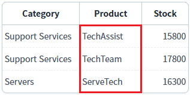
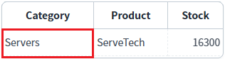
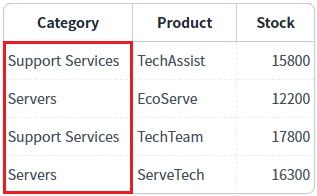

[DataList] 컬럼 데이터에 두 번째 필터 적용 시 합집합 또는 교집합 적용하기
1개요
DataList의 'setColumnFilter' 메소드를 사용하여 컬럼 데이터에 이미 적용된 필터 데이터와 병합하는 조건을 설정한 예제입니다.
'setColumnFilter' 메소드의 첫 번째 인자의 'condition' 속성의 설정에 따른 결과를 확인할 수 있습니다.
'condition' 속성의 설정 값에 따른 동작 방식은 다음과 같습니다. - "and" : 교집합으로, 이미 적용된 필터 데이터와 병합하는 조건입니다. - "or" : 합집합으로, 이미 적용된 필터 데이터와 병합하는 조건입니다.
2구현된 기능
두 번째 필터 적용 시 'AND'(교집합) 조건으로 호출
두 번째 필터 적용 시 'OR'(합집합) 조건으로 호출
3예제 테스트 방법
3.1공통 버튼 설명
버튼: 'DataList의 데이터 초기화'
기능: DataList에 적용된 필터를 모두 해제하고 초기 데이터를 설정합니다.
3.2두 번째 필터 적용 시 'AND'(교집합) 조건으로 호출
1
STEP 1: 초기 상태 확인하기
필터를 적용할 DataList와 GridView와 연결되어 있습니다.
GridView를 통해 필터가 적용된 데이터를 확인할 수 있습니다.
초기 상태는 필터가 적용되지 않은 상태입니다.
GridView는 예제 영역 '결과 확인용 GridView' 아래에 구성되어 있습니다.Image 1.브라우저(Chrome) 실행 예시

2
STEP 2: 'Product' 컬럼에 첫 번째 필터를 적용합니다.
"1.1 AND 조건 - 'Product' 컬럼의 값에 'Tech'이 포함된 경우" 버튼을 클릭합니다.3
STEP 3: 실행된 결과를 확인합니다.
'Product' 컬럼의 데이터에 'Tech'이 포함된 데이터가 출력됩니다.
Image 2.브라우저(Chrome) 실행 예시

영역 '로그 확인'에 출력된 로그를 확인합니다. (브라우저의 개발자 도구 콘솔에도 로그가 출력되며, 객체 형식으로 확인할 수 있습니다.) 필터 조건이 담긴 JSON을 확인할 수 있습니다.
Example 1.Log
[10:26:31] # 1.1 AND 조건 - 'Product' 컬럼의 값에 'Tech'이 포함된 경우 | 필터 조건
[10:26:31] {
"type": "row",
"colIndex": "product",
"key": "Tech",
"exactMatch": false,
"condition": "and"
}4
STEP 3: 'Category' 컬럼에 두 번째 필터를 "AND" 조건으로 적용합니다.
"1.2 AND 조건 - 'Category' 컬럼의 값에 'Servers'와 일치하는 경우" 버튼을 클릭합니다.5
STEP 4: 실행된 결과를 확인합니다.
이미 적용된 필터 데이터에서 'Category' 컬럼의 데이터가 'Servers'와 일치하는 데이터가 출력됩니다.
Image 3.브라우저(Chrome) 실행 예시

영역 '로그 확인'에 출력된 로그를 확인합니다. (브라우저의 개발자 도구 콘솔에도 로그가 출력되며, 객체 형식으로 확인할 수 있습니다.) 필터 조건이 담긴 JSON을 확인할 수 있습니다.
Example 2.Log
[10:27:26] # 1.2 AND 조건 - 'Category' 컬럼의 값에 'Servers'와 일치하는 경우 | 필터 조건
[10:27:26] {
"type": "row",
"colIndex": "category",
"key": "Servers",
"exactMatch": true,
"condition": "and"
}3.3두 번째 필터 적용 시 'OR'(합집합) 조건으로 호출
1
STEP 1: 초기 상태 확인하기
필터를 적용할 DataList와 GridView와 연결되어 있습니다.
GridView를 통해 필터가 적용된 데이터를 확인할 수 있습니다.
초기 상태는 필터가 적용되지 않은 상태입니다.
GridView는 예제 영역 '결과 확인용 GridView' 아래에 구성되어 있습니다.Image 4.브라우저(Chrome) 실행 예시
2
STEP 2: 'Product' 컬럼에 첫 번째 필터를 적용합니다.
"2.1 AND 조건 - 'Product' 컬럼의 값에 'Tech'이 포함된 경우" 버튼을 클릭합니다.3
STEP 3: 실행된 결과를 확인합니다.
'Product' 컬럼의 데이터에 'Tech'이 포함된 데이터가 출력됩니다.
Image 5.브라우저(Chrome) 실행 예시
영역 '로그 확인'에 출력된 로그를 확인합니다. (브라우저의 개발자 도구 콘솔에도 로그가 출력되며, 객체 형식으로 확인할 수 있습니다.) 필터 조건이 담긴 JSON을 확인할 수 있습니다.
Example 3.Log
[10:28:13] # 2.1 AND 조건 - 'Product' 컬럼의 값에 'Tech'이 포함된 경우 | 필터 조건
[10:28:13] {
"type": "row",
"colIndex": "product",
"key": "Tech",
"exactMatch": false,
"condition": "and"
}4
STEP 3: 'Category' 컬럼에 두 번째 필터를 "OR" 조건으로 적용합니다.
"2.2 OR 조건 - 'Category' 컬럼의 값에 'Servers'와 일치하는 경우" 버튼을 클릭합니다.5
STEP 4: 실행된 결과를 확인합니다.
이미 적용된 필터 데이터와 원본 데이터를 대상으로 'Category' 컬럼의 데이터가 'Servers'와 일치하는 데이터가 출력됩니다.
Image 6.브라우저(Chrome) 실행 예시

영역 '로그 확인'에 출력된 로그를 확인합니다. (브라우저의 개발자 도구 콘솔에도 로그가 출력되며, 객체 형식으로 확인할 수 있습니다.) 필터 조건이 담긴 JSON을 확인할 수 있습니다.
Example 4.Log
[10:28:36] # 2.2 OR 조건 - 'Category' 컬럼의 값에 'Servers'와 일치하는 경우 | 필터 조건
[10:28:36] {
"type": "row",
"colIndex": "category",
"key": "Servers",
"exactMatch": true,
"condition": "or"
}4구현 예시
4.1두 번째 필터 적용 시 'AND'(교집합) 조건으로 호출
DataList의 'setColumnFilter' 메소드를 사용하여 스크립트를 작성합니다. 'setColumnFilter' 메소드의 첫 번째 인자의 'condition' 속성의 설정 값을 'and'로 지정합니다. 세부 설정은 아래의 스크립트 예시에 작성되어 있습니다.
Example 5.Script
//예제 파일에서는 스크립트 scwin.btn_exam1_2_onclick에 작성되어 있습니다. // 필터 조건이 담긴 JSON var jsnFilterOptions = {}; // 기 적용된 필터 데이터와의 병합 조건. 적용된 필터 데이터를 대상으로 검색합니다. jsnFilterOptions.condition = "and"; // 검색 방식. 검색 대상 데이터를 문자열로 변경한 뒤 비교 연산 "===" 또는 메소드 "indexOf"로 검색. jsnFilterOptions.type = "row"; // DataList의 컬럼 ID 또는 컬럼 Index. 검색 대상. jsnFilterOptions.colIndex = "category"; // 검색 문자열. jsnFilterOptions.key = "Servers"; // 검색 대상 데이터와 검색 문자열과의 완전 일치 여부. 비교 연산 "==="로 검색. jsnFilterOptions.exactMatch = true; // DataList 'dlt_exam'에 필터를 적용합니다. dlt_exam.setColumnFilter(jsnFilterOptions);
4.2두 번째 필터 적용 시 'OR'(합집합) 조건으로 호출
DataList의 'setColumnFilter' 메소드를 사용하여 스크립트를 작성합니다. 'setColumnFilter' 메소드의 첫 번째 인자의 'condition' 속성의 설정 값을 'or'로 지정합니다. 세부 설정은 아래의 스크립트 예시에 작성되어 있습니다.
Example 6.Script
//예제 파일에서는 스크립트 scwin.btn_exam2_2_onclick에 작성되어 있습니다. // 필터 조건이 담긴 JSON var jsnFilterOptions = {}; // 기 적용된 필터 데이터와의 병합 조건으로 합집합 적용. 이미 적용된 필터 데이터와 원본 데이터를 대상으로 검색한 데이터가 포함됩니다. jsnFilterOptions.condition = "or"; // 검색 방식. 검색 대상 데이터를 문자열로 변경한 뒤 비교 연산 "===" 또는 메소드 "indexOf"로 검색. jsnFilterOptions.type = "row"; // DataList의 컬럼 ID 또는 컬럼 Index. 검색 대상. jsnFilterOptions.colIndex = "category"; // 검색 문자열. jsnFilterOptions.key = "Servers"; // 검색 대상 데이터와 검색 문자열과의 완전 일치 여부. 비교 연산 "==="로 검색. jsnFilterOptions.exactMatch = true; // DataList 'dlt_exam'에 필터를 적용합니다. dlt_exam.setColumnFilter(jsnFilterOptions);
5주요 API
setColumnFilter( filterOptions )
filterOptions.condition
filterOptions.colIndex
filterOptions.type
filterOptions.key
filterOptions.exactMatch
filterOptions.param
clearFilter( )